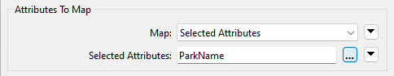
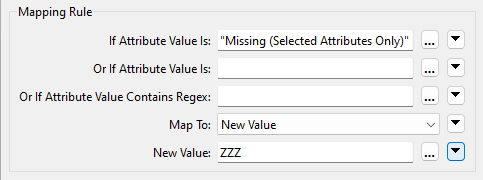
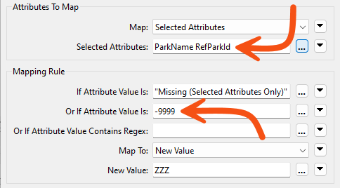

Learning Objectives
After completing this lesson, you’ll be able to:
- Identify null and missing attribute values.
- Set null and missing attribute values.
- Filter out null and missing attribute values from your data.
Resources
- Starting workspace
- C:\FMEData\Workspaces\AdvancedDataTransformation\exercise-handle-null-and-missing-values.fmw
- Complete workspace
- C:\FMEData\Workspaces\AdvancedDataTransformation\exercise-handle-null-and-missing-values-complete.fmw
- Parks.zip (MapInfo TAB)
- C:\FMEData\Data\Parks\Parks.tab
Introduction
In this workspace, a colleague tries to write a list of parks to a Geodatabase dataset. The parks must be in alphabetical order – according to their name – and features with no park names must be written as null and appear last in the dataset.
However, their workspace needs to be configured correctly. The parks are sorted alphabetically, but unnamed parks always appear first.

By default, FME will display <null>, <missing>, and empty values at the top of attribute columns sorted alphabetically or, naturally, ascending. This sorting behavior applies to Visual Preview manual attribute column sorting and the Sorter transformer output. This feature is helpful when working with your data, as you'll be more likely to spot them quickly when inspecting data. However, in cases where you need to ensure they are written last, you must do some attribute handling.
1) Start Workbench
Open the starting workspace in FME Workbench (2025.1 or later).
Using feature caching, run the workspace and inspect the source dataset as a table. You’ll see that the data is in order of ParkId, not ParkName, and that there are <missing> values scattered throughout:

To sort the <missing> data, we'll need to set their ParkName attribute to something that appears at the bottom of a sorted list, then set them back to <null> afterward.
2) Add NullAttributeMapper
Add a NullAttributeMapper transformer before the Sorter transformer. Inspect the parameters.
Ensure “Map” is set to Selected Attributes, and choose the attribute ParkName:

Underneath is a section on what to map to.
We know the values here are currently listed as <missing>, so set the “If Attribute Value Is” parameter to Missing (Selected Attributes Only).
We want to map these to a value at the bottom of an alphabetically sorted list, so change “Map To” to New Value and enter ZZZ as the new value.

Click OK to accept the parameter changes.
3) Add NullAttributeMapper
Now add a second NullAttributeMapper; this time, it should be connected after the Sorter.
Open the parameters and, once again, ensure “Map” is set to Selected Attributes and select the ParkName attribute. This time, turn the ZZZ values back to nulls:

Technically, we could turn them back into <missing>; the Geodatabase writer will write them out as nulls. However, assuming we didn’t know that, null is the safer option and will give us what we want.
4) Save and Run the Workspace
Save the workspace and then run it. Inspect the output. This time, the data should be sorted by ParkName, but with all null values at the end of the dataset:

5) Fix RefParkId
Your colleague is now asking you to fix the RefParkId field. You'll have noticed that many of the values are -9999. That's the MapInfo equivalent of "nothing," but it would be better to set these to proper nulls for the Geodatabase.
That's very simple to do. Before you look at the instructions, take a moment to think about how to fix it.
To do this, open the parameters dialog for the first NullAttributeMapper. Add RefParkId to the list of attributes for processing. Then add -9999 to the "Or If Attribute Value Is" field:

Now open the second NullAttributeMapper and add RefParkId to the list of attributes for processing.
These values will get mapped to ZZZ with the missing ParkName values. Then, they will be turned into true nulls by the second NullAttributeMapper.
Challenge
The requirements have changed! Edit the workspace to check both ParkName and RefParkID. If either attribute is null, the feature should be filtered out and written to a separate Feature Type (table) in the Geodatabase. Try this out; you’ll need to do it to answer a quiz question below.